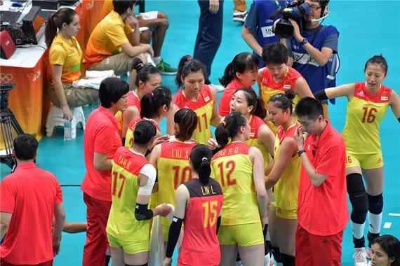
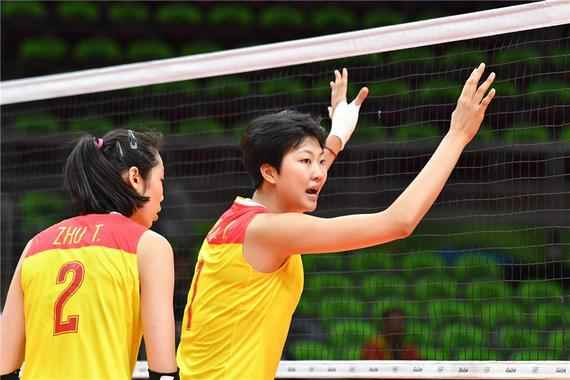
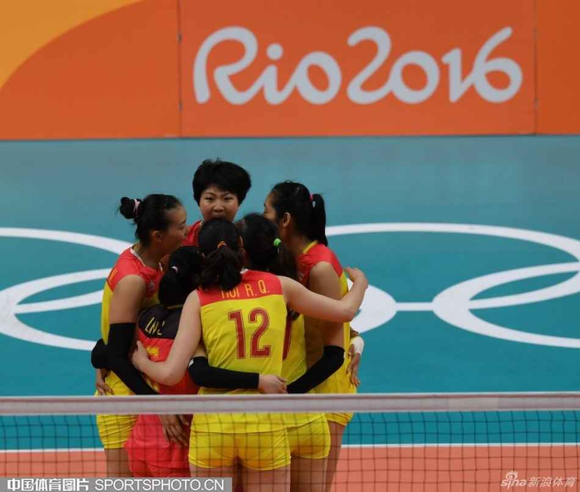
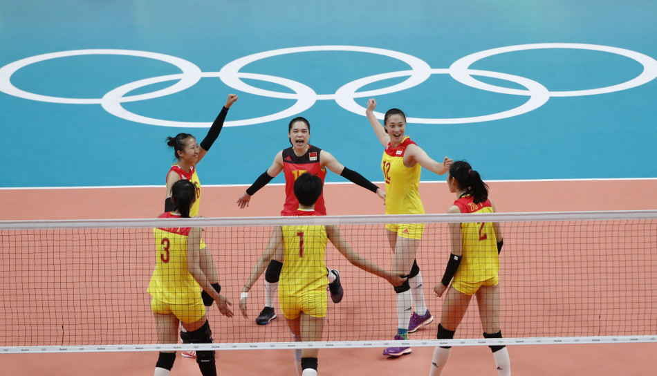
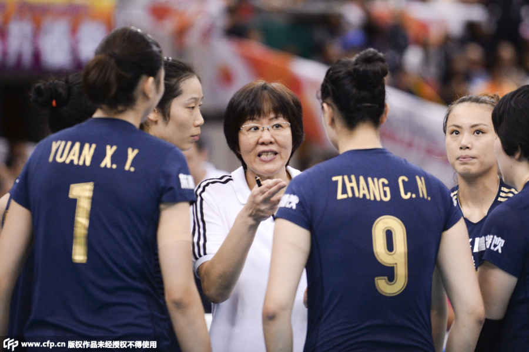
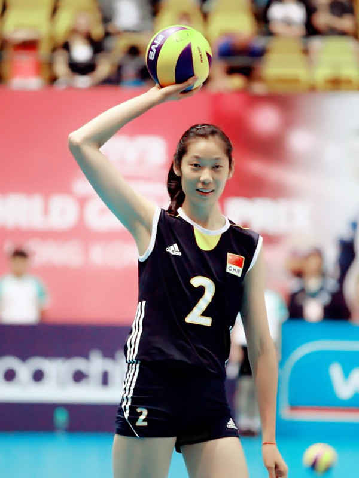
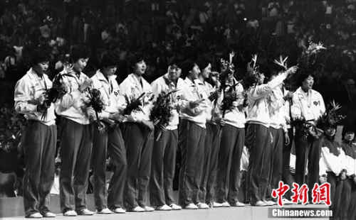
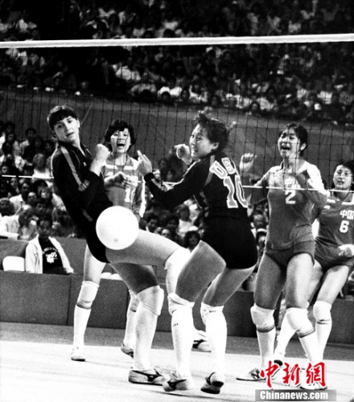

北京时间8月21日，里约奥运会女排决赛，中国女排3-1战胜塞尔维亚女排，获得冠军，同时也报了小组赛0-3惨败之仇。

首局，双方进入状态较快，中国队3-2领先时，拉西奇两次发球帮助塞尔维亚队反超，但随后她的发球下网，双方战至4平。张常宁反击被拦，朱婷后攻下球，双方形成相持。
斯特瓦诺维奇背飞命中，博斯科维奇一号位后攻反击得手，中国队串联失误，米哈伊洛维奇反击得手，塞尔维亚队连得4分以9-5拉开比分，郎平暂停。
朱婷后攻再次帮中国队度轮，但斯特瓦诺维奇背飞得手，徐云丽背飞直线被判出界，郎平挑战打手失败，中国队开局6-11落后。
朱婷后攻得手，但反击出界，中国队7-12落后。徐云丽和袁心玥先后快攻得手，袁心玥和张常宁拦住了博斯科维奇的扣球，中国队追至10-12，塞尔维亚主帅特尔季奇暂停。
多个来回球，双方防守都非常出色，最终博斯科维奇反击被判出界，特尔季奇提出挑战，结果失败，中国队在徐云丽的发球轮追至11-12。
博斯科维奇强攻再次得手，不过米哈伊洛维奇跳发下网，随着拉西奇快攻得手和发球连得2分后，塞尔维亚队16-12再次拉开比分。
朱婷强攻突破度过卡轮，博斯科维奇打手出界后跳发得分，塞尔维亚队拼发球很凶，18-13占先。博斯科维奇继续跳发但出界，米哈伊洛维奇后攻出界，中国队反击机会，徐云丽探头没打死，张常宁的调整攻被防起后被对手打反击，中国队15-19落后。
惠若琪平拉开得手，米哈伊洛维奇四号位强攻命中，米哈伊洛维奇随后小斜线被判出界，特尔季奇挑战成功，中国队16-21落后。
徐云丽背快命中，中国队防守起球，但队员互相比较乱干扰了一下，魏秋月垫球失误，中国队17-22落后，郎平暂停。
徐云丽背飞吊球迫使对手窝果，博斯科维奇进攻中国队有效拦网，朱婷探头出界，博斯科维奇反击命中，塞尔维亚队24-18获得局点，米哈伊洛维奇发球下网，张常宁扣球出界，中国队19-25告负，大比分0-1落后塞尔维亚。
第二局，中国女排变阵，丁霞和杨方旭顶替魏秋月和张常宁出战，其他阵容不变。开局，中国队也开始加强发球的攻击性，对手一传也有了压力，两门重炮出现失误，中国队6-3占先。
短暂相持后，塞尔维亚队逐渐利用博斯科维奇的强攻迫近到8-10，徐云丽背飞命中遏制住对手追分势头。惠若琪发球擦网得分，中国队12-8占先。惠若琪发球再次破攻，米哈伊洛维奇调整攻小斜线出界，中国队13-8领先，特尔季奇暂停。
拉西奇快攻成功度轮。朱婷一传半到位，自己打调整攻得手，拉西奇快攻被判出界，特尔季奇挑战失败，中国队15-9占先。
博斯科维奇四号位扣球得手，袁心玥拦回了博斯科维奇的扣球后打探头得分，杨方旭发球破攻朱婷反击下球，杨方旭的发球得分，中国队18-10占先。
相持到20-14时，郎平暂停。惠若琪调整攻得手，斯特瓦诺维奇背飞命中，又是惠若琪打手出界，反击机会丁霞传球过低杨方旭处理球出界，但朱婷一锤定音，中国队23-16占先。
徐云丽发球破攻，但博斯科维奇处理球得分，郎平提出挑战但失败，朱婷一攻命中，中国队24-17获得局点。拉西奇快攻触网，中国队25-17扳回一局，大比分1-1战平。

第三局，中国队延用第二局首发，丁霞和杨方旭继续出战。
中国队1-2落后时，丁霞倒地鱼跃单手救球后朱婷处理球迫使对手连串失败。战至3-5时，博斯科维奇跳发出界，特尔季奇挑战失败，中国队追至4-5。袁心玥发球破攻，徐云丽探头得分，5平。
中国队拼防守最终换来了米哈伊洛维奇吊球失误，双方战至6平。杨方旭发球破攻，徐云丽反击快攻得手以及惠若琪拦住了博斯科维奇的强攻，中国队8-6反超，特尔季奇暂停。
气势上来的中国队10-7保持领先，博斯科维奇后攻下球，朱婷强攻打手出界，中国队防守起球，朱婷反击打手出界，中国队12-8占先。
徐云丽发球不错，不过拉西奇快攻得分，博斯科维奇扣球出界，中国队13-9保持领先。
马莱塞维奇一攻命中，袁心玥背飞得手，惠若琪拦住了博斯科维奇的强攻，中国队15-10领先，迫使特尔季奇暂停。
博斯科维奇强攻出界，特尔季奇挑战失败，中国队16-10保持领先。特尔季奇用副攻维利科维奇换下斯特瓦诺维奇。马莱塞维奇一攻打中，博斯科维奇再次失误，徐云丽反击背飞命中，中国队18-11领先。
特尔季奇又换主攻，布萨换下马莱塞维奇。丁霞拦住了布萨的扣球，中国队19-11领先。
塞尔维亚拿到一分后，惠若琪平拉开命中，博斯科维奇强攻得手，维利科维奇发球得分，米哈伊洛维奇反击打手出界，塞尔维亚队追至15-20，郎平暂停。
杨方旭一传过网被打探头，博斯科维奇随后连续反击得手，塞尔维亚队追至18-20，徐云丽短平快命中遏制住对手反扑。
拉西奇扣球命中，朱婷反击打手出界，拉西奇快攻再次得手，米哈伊洛维奇发球直接得分，塞尔维亚队追至20-22。
朱婷四号位强攻被拦，塞尔维亚队追至21-22，郎平暂停。米哈伊洛维奇跳发下网，中国队23-21占先。拉西奇快攻命中，魏秋月和龚翔宇上场。朱婷强攻被防起，林莉防起吊球，朱婷直线得手，中国队24-22获得局点，朱婷发球得分，25-22再胜一局，大比分2-1领先塞尔维亚。

第四局相持到5平后，惠若琪的强攻相继被拦和打杆失误，中国5-7落后。拉西奇发球下网、马莱塞维奇强攻出界，中国追成7平。中国咬至9-10后，惠若琪小斜线命中、杨方旭反击打手出界11-10反超。11平后朱婷拉开强攻命中、米哈伊洛维奇扣球失误，中国13-11超出，塞尔维亚换上主攻布萨。博斯科维奇反击对手扳成13平，朱婷两度强攻命中、杨方旭发球建功，中国连夺3分16-13领先。落后的塞队连换3名队员，在16-19落后的情况下靠马莱塞维奇的强攻和维利科维奇的快攻追到18-19，中国凭徐云丽的快攻20-18占先。徐云丽短平快出界对方追成20平，22-21领先的中国两点换三点派上魏秋月和龚翔宇。朱婷和博斯科维奇强攻均有稳定表现战成23平，拉西奇发球出界，中国24-23领先拿下冠军点。张常宁发球破攻，惠若琪探头命中，中国25-23险胜，3-1力挫塞尔维亚夺魁。
经过8个比赛日的激烈角逐，2016年里约奥运会女排比赛全部结束。中国时隔12年再度摘金，塞尔维亚收获银牌创历史最佳战绩，美国赢得铜牌，荷兰名列第4同样收获历史最好成绩，巴西、日本、韩国和俄罗斯并列第5收官，阿根廷和意大利排名并列第9，喀麦隆和波多黎各获得并列第11。
相关阅读：
冰冻三尺，非一日之寒，冠军之师，非一日铸就
2012年伦敦奥运会，中国女排在奥运会上未能杀入四强铩羽而归。回国之后的中国女排痛定思痛，启用了一位新的教练。这位教练在上任之后对中国女排进行了大刀阔斧的改革，弃用了一批已经争战多年的老将，在重要位置上大胆启用年轻球员，球队成绩也稳步攀升。转眼三年过去，这支新女排迎来了世界杯之战，他们在世界杯上将劲敌俄罗斯挑落马下，最后一战大胜东道主日本队，夺得了世界杯的冠军，并且顺利地获得了来年奥运会的入场券。此时，距离中国女排上一次染指世界“三大赛”冠军已经过去了十几年。

2013年4月，郎平再次执掌中国女排。面对转型的困境，郎平给中国队最大的改变就是组建“大国家队”，每次集训的名单都在20人以上，有时甚至超过30人，2013年她将还在国青队的朱婷“破格”提拔进入一队。而郎平在执教之初就曾说过的一句话“这支队伍出成绩会是在2015年”。
再次执掌中国女排的郎平面对的是一支人员老化、打法摇摆的半成品队伍。面对转型的困境，郎平给中国队最大的改变就是组建“大国家队”，每次集训的名单都在20人以上，有时甚至超过30人，在联赛中表现出色的年轻球员几乎都获得了到国家队一试身手的机会，也让她们得以迅速成熟。
从此时的大环境来说，经过广州恒大女排在国内联赛中的搅局，各支俱乐部球队也开始重视起强力接应等诸多符合国际潮流的打法。虽然时间尚短还未成气候，但同蔡斌时代相比，郎平在选材上仍然宽裕了许多。
不过郎平选材的眼光同样相当独道。在2013年，她将还在国青队的朱婷“破格”提拔进入一队，经过两年的磨炼，朱婷已经成长为世界一流的主攻。2014年，郎平又将年仅17岁的小将袁心玥招入国家队，甚至跳过了国青队的经历。身高将近两米的袁心玥在世锦赛上一鸣惊人，凭借着令人惊艳的表现，她获得了当年体坛风云人物的最佳新人奖。
新人的迅速成熟，大大增加了中国女排的板凳厚度，而郎平“没有主力阵容，谁状态好谁上”的理念，也让中国女排的队内良性竞争更加激烈。为了找到理想的自由人，郎平甚至一下招入了6名自由人入队考察，最终小将林莉脱颖而出。在这样的情况下，张常宁、林莉、丁霞、刘晏含等新人也如雨后春笋般地冒了出来，而在伦敦奥运会之后，人们还在为中国女排后继无人而感到担忧。郎平给中国女排带来的改变可谓巨大。
在夺得世界杯冠军之后，中国女排顺利地拿到了2016年里约奥运会的入场券，印证了郎平在执教之初曾说过的一句话“这支队伍出成绩会是在2015年”，而郎平的另外一句话则更加让人兴奋。在她第一次组建国家队的时候，郎平说：“我们的目标并不仅仅是2016年的里约，而是更远的2022年。”
“历史总是惊人地相似”，陈忠和与中国女排的故事再一次在郎平和她的球队身上重演，而更让我们期待的是未来：夺得了2003年世界杯冠军的中国女排在随后的雅典奥运会上大放异彩，凭借着一场艰苦卓绝的决赛最终击败了俄罗斯队时隔20年再度夺得桂冠，成就了中国女排“黄金一代”的美名。
搬好板凳挤满院！"MVP"朱婷河南老家亲友围坐观看女排

北京时间8月21日上午9点15分，中国女排打响里约奥运金牌争夺战。在赛场上奋战的姑娘们离不开家人在背后的支持，就在今天女排大战进行时，在中国女排主力主攻手朱婷的老家，河南周口市郸城县，家乡的父老乡亲们也聚集到一起，观看女排大战和朱婷的表现。
朱婷今年21岁，是中国女排的主力主攻。在半决赛中国女排3比1战胜荷兰队的比赛中，她包揽了中国队大部分进攻，全场拿下了33分，是全场得分最高的球员。赛后国际排联的数据表明朱婷凭借本场比赛的出色发挥，进入奥运会单场得分的TOP3，而且她是奥运会历史上单场得分超过30分的第九人。
奥运会女排比赛历史上，单场最高得分是2004年雅典奥运会上巴西女排的玛丽安妮创造的37分，2012年伦敦奥运会韩国球星金延璟单场得分34分排第二位。朱婷的这次单场33分，排名奥运女排历史上单场得分第三位。
作为中国女排的最有利得分点，朱婷的表现也让家乡的亲人和朋友非常关注，希望她在决赛中为中国队拿下金牌。
今天一大早，大家就拿着椅子来到朱婷家的大院子里，家人搬了电视机出来一起观看。还有人专门准备了一面大国旗，为中国女排和朱婷助威。
从饱受质疑到重夺冠军！女排精神是五连冠的传承

1984年8月8日，中国女排在洛杉矶奥运会上击败美国女排夺金。图为获颁金牌的中国女排运动员
中新网8月21日电 中国女排一直以来都是国人的骄傲，从20世纪80年代创造的“五连冠”伟业，到2004年雅典奥运夺冠重回巅峰，女排一路所经历的起起落落实在太多。时隔12年，中国女排终于再次杀入奥运决赛，能否再续辉煌，就看今朝一搏！
1981-1986 巅峰：五连冠伟业
提到中国女排，就不得不提“五连冠伟业”。1981年，中国女排参加了日本世界杯。在时任主教练袁伟民的带领下，郎平、孙晋芳、陈招娣等队员获得中国女排的第一个世界冠军，也是中国三大球项目的第一个世界冠军。从此，世界女子排球真正进入“中国时代”。
1982年秘鲁世锦赛，中国队3：0战胜东道主秘鲁队首夺世锦赛冠军，袁伟民大胆启用年轻队员梁艳、郑美珠被称为“神来之笔”。
1984年洛杉矶奥运会，虽然是中国姑娘们首次参加的奥运比赛，但是她们已经具备了夺冠的实力。小组赛中，中国队前两场分别以3：0轻松击败巴西和联邦德国。虽然在与美国队对战时1：3输掉比赛，但是决赛中，果敢的中国女排丝毫没有受到小组赛失利的影响，3：0完胜对手取得“三连冠”。
1985年东京世界杯中古决战，强大的中国女排3：1战胜古巴队，实现不可思议的“四连冠”。而1986年前捷克斯洛伐克世锦赛，中国女排在极为困难的情形之下出征，最终以8战8胜的出色战绩蝉联冠军，成为世界排球史上第一支获得“五连冠”的队伍！

1984年8月4日，美国加州长滩体育馆，女排分组预选赛。图中的中国女排队员分别是杨晓军、梁艳和杨锡兰
1988-1996 低谷：成绩滑坡
“五连冠伟业”实现后，随着郎平、梁艳等名将相继退役，中国女排出现青黄不接的现象。1988年汉城奥运会，小组赛中的中国女排表现算不上亮眼，但依旧稳定出色杀出小组赛。半决赛中，中国女排不敌前苏联女排，最终在铜牌赛中战胜韩国队只获得铜牌。
如果说在汉城奥运会上，中国女排只是“不幸”输掉比赛，那么在1992年巴塞罗那奥运会上，中国女排成绩下滑可以说是一落千丈。小组赛三战皆败，分别以1：3、2：3、2：3负于古巴、荷兰和巴西。虽然在7-8名决赛中3：0战胜西班牙，但最终也只获得第7名。
1995年，名将郎平被中国排协聘为中国女排主教练，她率领中国女排走出低谷。
在1996年亚特兰大奥运会小组赛中，中国姑娘又恢复了以往的神勇，3：0横扫荷兰、3：2力克韩国、3：1战胜美国、3：0分别轻取乌克兰和日本，中国女排靠着拼搏不息的精神一路杀入决赛。
决赛中，面对当时排名世界第一的古巴队，虽然中国姑娘们拼尽全力，但处于巅峰时期的古巴女排仍然在各项技术方面胜出一筹。最终， 中国女排在先胜一局的情况下被对手连扳三局。决赛的失利并不能遮掩女排姑娘们在此次奥运系列比赛中所表现出的顽强作风和逆境中奋发崛起的斗志，这枚奥运银牌在众多中国排球工作者眼中依然如同金牌一般灿烂。
2000年悉尼奥运会上，中国女排第5名的成绩让广大球迷倍感失落，排管中心无奈之下做出换帅的决定，名不见经传的陈忠和上任了。这位被称为“最好的陪打最好的副手”的主教练，大胆启用赵蕊蕊、冯坤、杨昊等年轻运动员，按照自己的理想重组中国女排队伍。
2002年德国世锦赛，这被称为陈忠和和中国女排的第一次大考。在这次世锦赛中，中国女排陷入“让球风波”，最终负于意大利无缘决赛，仅收获第4名。但是到了2003年日本世界杯，卧薪尝胆一年之后的中国女排“血洗”日本女排，收获阔别17年的世界冠军，冯坤、赵蕊蕊、周苏红等名字开始成为中国骄傲。
2004年雅典奥运会，在赵蕊蕊受伤的情况下，顽强的中国女排在0：2落后的情况下强势逆转，最终3：2战胜俄罗斯，时隔20年重新获得奥运会冠军！在那个疯狂的夜晚，无数球迷高呼“中国女排回来了！”
2008年北京奥运会，经历新老交替的中国女排内外交困，冯坤、周苏红等老将饱受伤病困扰，最终女排收获一枚铜牌，未能卫冕。不过在当时，奖牌是对中国女排最大的安慰。
2012-2016 回归：时隔12年再进奥运决赛
2012年伦敦奥运会，中国女排深陷所谓的“死亡之组”，同组对手有北京奥运冠亚军巴西队和美国队，可谓是每场都是硬仗，面临小组即遭淘汰的危险。然而，中国女排最终以三胜两负的战绩排名小组第二，成功从“死亡之组”中杀出重围晋级八强。四分之一决赛，中国女排却意外输给在奥运赛场上从未输过的日本队，无缘四强，最终并列第5。
2016里约奥运会，郎平再次执教中国女排。虽然在小组赛中接连输给荷兰、塞尔维亚与美国，女排姑娘们以小组第四的成绩堪堪出线，但是她们奋勇拼搏，最终拿下东道主巴西成功晋级半决赛。
如果说战胜卫冕冠军有一点运气使然，那么3：1击败荷兰则是最好的“复仇”。四局比分分别为27：25、23：25、29：27、25：23，中国女排时隔12年之后再次杀进奥运决赛。
12年，是一个轮回。从奥运之前的屡遭质疑，到如今一路晋级决赛，从逆转巴西到“复仇”荷兰，中国女排战胜了强大对手、激励了亿万国人，更振奋了前进的自己。面对决赛强大的塞尔维亚队，中国姑娘完美的表现，为中国代表团再添一金！中国女排的精神永恒不朽！（完）